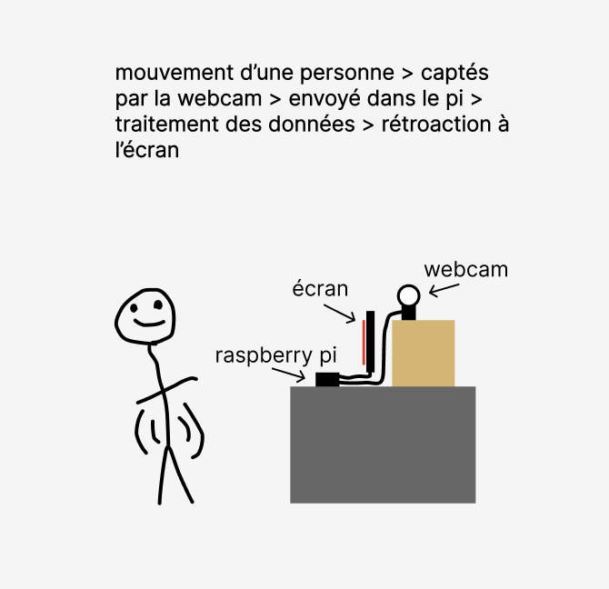
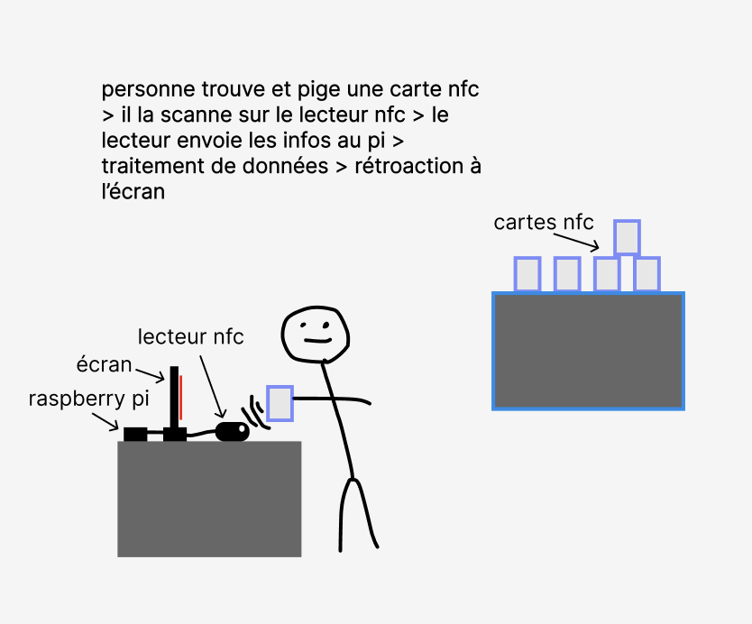
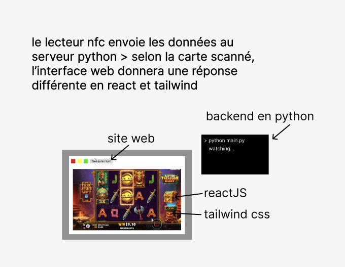

Analyse du projet
Présentation du projet
Notre projet consiste à créer un système qui remplace les casinos modernes, pour aider les individus sédentaires à faire de l'activité physique pour gagner leur mises de fonds.
Objectifs et visées du projet
Trouver une alternative pour les gens dépendants du casino. Pour éliminer les casinos de peu a peu, nous misons sur une alternative qui cherche à aider le monde a1 combler leur besoins en ayant du plaisir, plutôt qu'a attacher leur morale sur le jeu.
Contraintes du projet
Le client veux éliminer les jeux de hasard avec de l'argent réel. Il veux battre l'addiction du casino. Il ne veux pas que les gens soient statiques.
Contraintes technologiques
- Longévité : le Raspberry Pi et la webcam peuvent tourner longtemps sans problème. Le Pi est fait pour rester allumé en continu et la webcam a pas de pièces qui s'usent.
- Stabilité : Python, React et MediaPipe sont des technologies matures et bien testées. Le Pi aussi est fiable quand il tourne 24/7.
- Efficacité : MediaPipe est optimisé pour marcher en temps réel même sur du matériel moins puissant. React met à jour l'interface vite grâce à son rendu virtuel.
- Maintenabilité : Python et React ont de grosses communautés et beaucoup de documentation. Le Pi est facile à remplacer si il brise, et le code est séparé en backend et frontend ce qui rend les modifications plus simples.
Propositions
Mine Drop
Fonctionnement
Jeu d'hasard qui utilise des détecteurs de mouvements pour alimenter un jeu sur une interface web. Le joueur aura à utiliser ses mouvements pour utiliser le jeu et se faire des crédits. Le but de ce jeu est de miner des colonnes pour se rendre au coffre. Le coffre contient un multiplicateur pour multiplier la mise comme le jeu sur stake.
Réponse aux défis et contraintes
- Le détecteur de mouvement doit bien reconnaître les mouvements pour donner des points spécifiques pour des différents mouvements. Pour ce faire, on doit faire en sorte que le système reconnaissent les mouvements en étant très précis.
- Les pioches et les matériaux sont déterminés au hasard.
- Lorsqu'il n'existe plus de blocs dans la colonne, le coffre s'ouvre quand le jeu finit. Lorsqu'il n'existe plus de blocs dans la colonne, il ne doit plus avoir de pioches disponible.
Interactions attendues
- Amorce : le joueur se place devant la borne et met sa mise en crédits pour démarrer la partie.
- Déroulement : le joueur fait des mouvements devant la caméra pour recevoir des crédits afin de miner les colonnes. Les pioches et les matériaux sont déterminés au hasard. Quand il reste plus de colonnes, le coffre s'ouvre avec un multiplicateur.
- Temps : une partie dure plus ou moins une minute selon la chance du joueur avec les pioches.
Schématisation matérielle

Schématisation logicielle

Justification des technologies
- OpenCV : utlisé pour capturer le flux vidéo de la webcam.
- MediaPipe : permet de détecter les poses corporelles en temps réel.
- Python : notre langage principal côté serveur, car c'est le langage où OpenCV et MediaPipe sont le mieux intégrés.
- React : nous permet de créer une interface web réactive qui se met à jour en temps réel selon les mouvements du joueur.
- TailwindCSS : framework CSS utilitaire qui va rendre l'interface plus belle.
- Raspberry Pi : petit ordinateur compact, suffisamment puissant pour le traitement vidéo.
Treasure Hunt
Fonctionnement
Une autre façon de jouer au jeu, celui-ci implique des cartes NFC cachés dans un environnement prédéfinis, et le joueur doit les trouver pour jouer au jeu.
Réponse aux défis et contraintes
- Le joueur doit se déplacer physiquement pour trouver les cartes NFC cachées, ce qui élimine la sédentarité.
- Le jeu fonctionne avec des crédits et non de l'argent réel, donc pas de jeu de hasard avec de l'argent.
- Le fait de devoir bouger et chercher les cartes rend l'expérience plus active et amusante, ce qui aide à décrocher de l'addiction du casino traditionnel.
- Les cartes NFC doivent être bien connectées au lecteur pour que le scan déclenche les bonnes actions dans le jeu.
Interactions attendues
- Amorce : le joueur met sa mise en crédits et le jeu commence.
- Déroulement : le joueur doit se déplacer pour trouver des cartes NFC cachées dans l'environnement. Quand il en trouve une, il la scanne sur le lecteur et ça déclenche une action dans la machine à sous. Chaque carte fait une action différente.
- Temps : une partie dure quelque minutes, dépendamment du temps que le joueur prend pour trouver les cartes.
Schématisation matérielle

Schématisation logicielle

Justification des technologies
- Cartes NFC : utilisées pour cacher des actions dans l'environnement de jeu.
- Lecteur NFC : connecté au Raspberry Pi pour lire les cartes scannées par le joueur.
- Python : langage côté serveur qui traite les données reçues du lecteur NFC.
- React : nous permet de créer une interface web réactive qui change selon la carte scannée.
- TailwindCSS : framework CSS utilitaire qui va rendre l'interface plus belle.
- Raspberry Pi : petit ordinateur compact qui gère la communication entre le lecteur NFC et l'interface web.